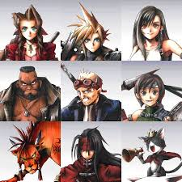
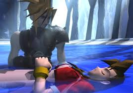

Final Fantasy VII

Mon perso préféré : Aerith Gainsborough
Aerith est une descendante des Cétras. Sa mère Ifalna est morte en essayant de
la mettre à l'abris.
Durant toute son enfance Aerith entend des voix sans savoir d'où elles viennent. Elle comprendra ce mystère l'année de
ses 22 ans, grâce à sa rencontre avec Clad.
Elle possède une limite break de guérison, très utile lors des combats.
Les persos principaux

Aeris, Clad, Tifa, Barett, Cid, Nanaki, Vincent, Cait-sith...
Aeris et le reste de la team sont tous membres du groupe Avalanche.
Ce groupe combat la shinra.inc afin de sauver la planète.
Le moment le plus triste du jeu :(

Après avoir poursuivi Séphiroth pendant des jours, la team se retrouve dans un village oublié.
Relachant leur vigilance un instant, ils ne voient pas Séphiroth arriver. Ce dernier transperce Aerith de son épée...
C'est le moment le plus triste du jeu, mais également le plus imcompréhensible...
Comment les concepteurs ont-ils pu faire mourir Aerith !?!